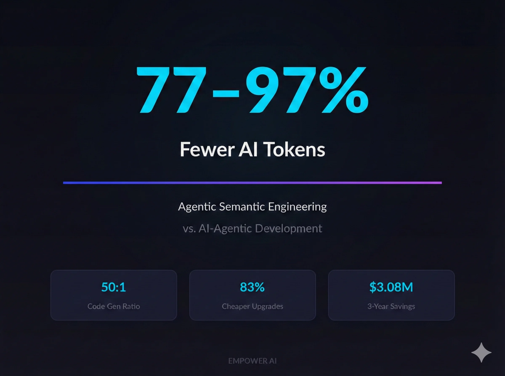

The Compute Crisis Is Here. Model-Driven Engineering Is the Answer.
AI inference costs are about to spike 2-3x. Enterprises building with pure AI-agentic approaches face an economic wall. Model-driven engineering delivers 77-97% fewer tokens per application — turning the compute crisis into a competitive advantage.
Read article →